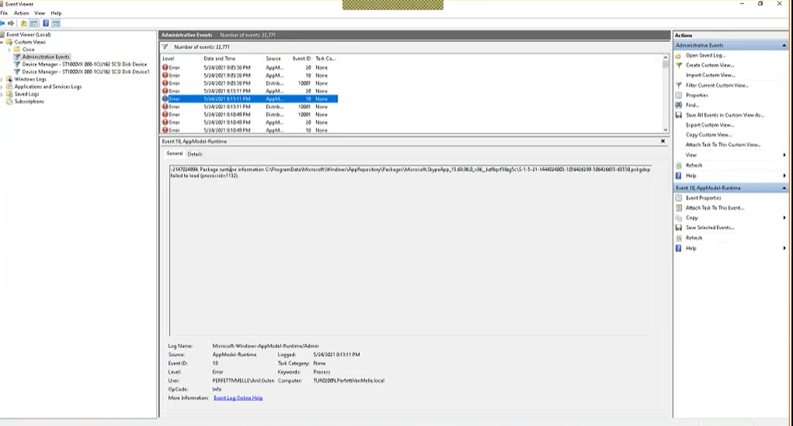

Event Viewner
Event Viewer, sistem ve uygulama olaylarını izlemenizi ve analiz etmenizi sağlayan bir araçtır. Event Viewer, bilgisayarınızda gerçekleşen herhangi bir olayı kaydedebilir ve bu olayların zamanını, kaynaklarını ve ayrıntılarını gösterir.
Bu araç, bilgisayarınızdaki birçok farklı bileşenin aktivitelerini takip eder, örneğin sistem dosyaları, yazılım uygulamaları, ağ hizmetleri, güvenlik ayarları ve daha fazlası. Event Viewer, bu aktivitelerin gerçekleşme zamanlarını, hata mesajlarını ve uyarıları takip eder.
Event Viewer ayrıca, olay günlükleri adı verilen özel kayıt defterleri oluşturur. Bu kayıt defterleri, ilgili olaylar hakkında ayrıntılı bilgi sağlar ve bilgisayarınızın sağlık durumunu izlemenize yardımcı olur.
